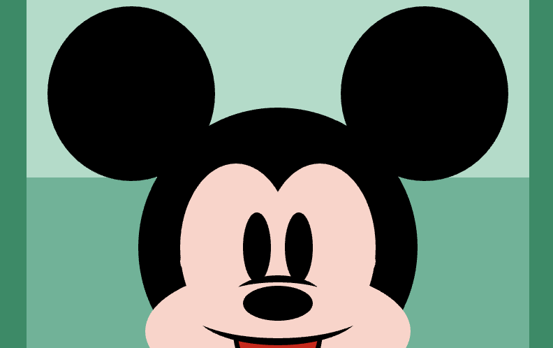
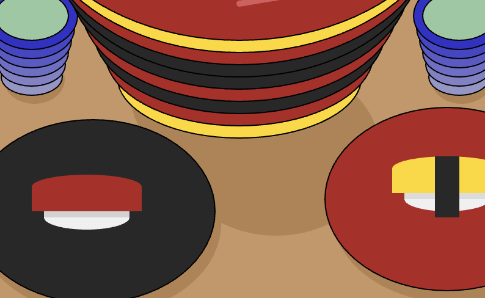
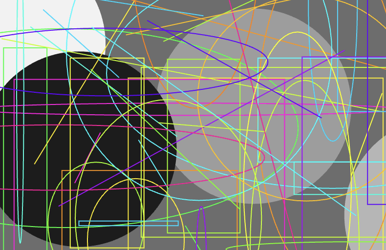
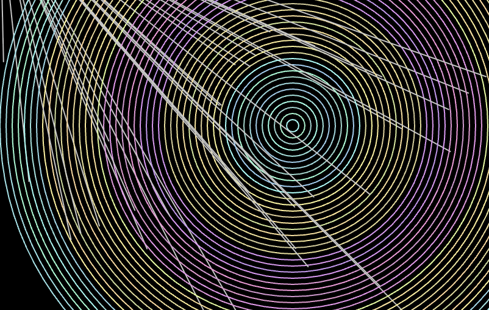
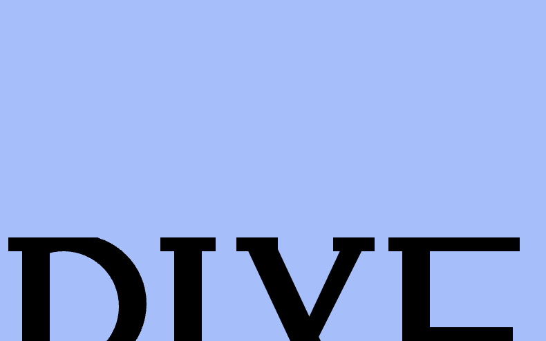
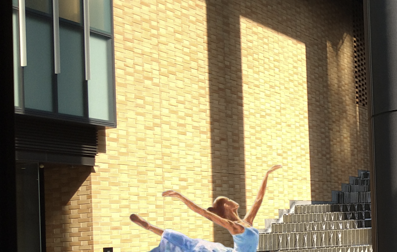
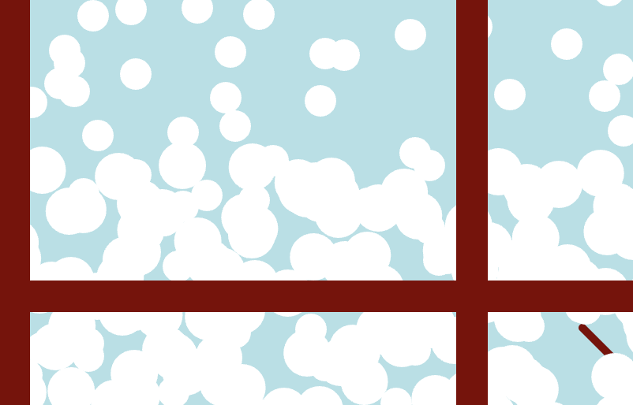
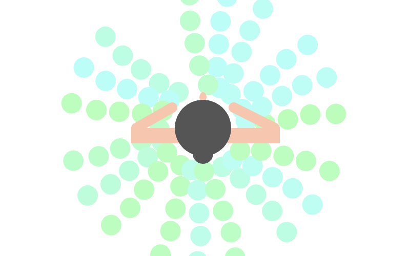
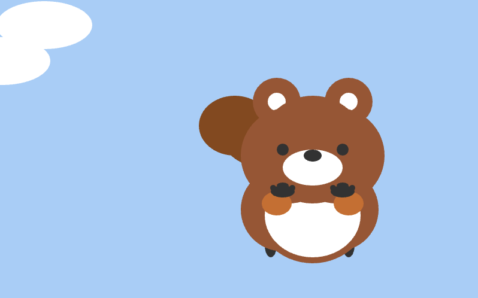
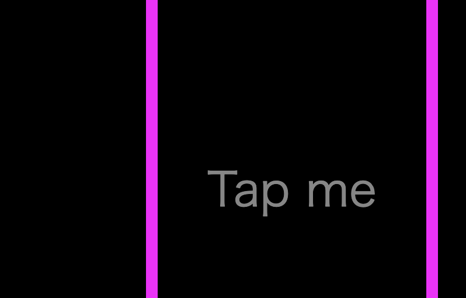

第1回目課題
円形や丸を座標を指定して表示する方法を学んだ。図形を組み合わせてキャラクターを描いた課題。

第2回目課題
変数を宣言し、演算子を用いて図形を連続させた課題を制作した。回転寿司をイメージした作品。

第3回目課題
ランダム関数と繰り返し処理のfor文を学んだ。無作為な図形と色を並べた作品。

第4回目課題
分岐処理のif文を学んだ。前回の課題であったランダム関数とfor文も取り入れて制作。

第5回目課題
ここからアニメーションを学んだ。変数を用いてその増減でオブジェクトを動かす課題を制作。

第6回目課題
画像を挿入しアニメーションとして動かすことを学んだ。バレリーナが踊っている様子を表現。

第7回目課題
自身で関数を作る方法を学習。関数を使い冬の雪景色を表現した。

第8回目課題
popやpush、scaleやtranslateなどについて学習。バレリーナが回っている様子を表現。

第9回目課題
マウスによる処理を学習。変数の増減率を変えたことでたぬきが空を飛んでいる様子を表現。

最終課題
「AIと人間」をテーマに最終課題を作成。ストーリーベースでページが遷移するようにした。